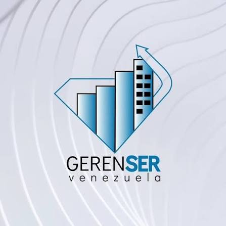

Producto de catálogo · Taller · En alianza con GerenSer Venezuela
Claude Avanzado
para Automatizaciones
Un taller de 8 horas para que tu equipo pase del chat a la automatización con Claude: prompting avanzado, Proyectos, Conectores, API y el Protocolo de Contexto de Modelo (MCP), en alianza con GerenSer Venezuela.
Tu equipo ya usa Claude para conversar. Aún no sabe usarlo para automatizar.
Responder correos, clasificar mensajes y atender consultas fuera de horario consume el tiempo de tu talento clave, caso por caso, sin ninguna automatización detrás. Este taller convierte ese uso conversacional en cuatro capacidades avanzadas de Claude funcionando.
Diagnóstico
- El equipo usa Claude solo para conversar: nunca dio el salto a automatizar un proceso completo, y ese salto no es intuitivo sin guía.
- El talento clave dedica tiempo valioso a tareas repetitivas: correos, clasificación y respuesta de mensajes directos (DM) en redes sociales.
- Los procesos se vuelven lentos e ineficientes por la ejecución o revisión manual, caso por caso.
- La atención al cliente no es 24/7: se pierden oportunidades fuera del horario laboral.
- Falta un criterio común para escalar procesos con Claude sin sumar más personal.

02 · Objetivos
A dónde llevamos
a tu equipo.
Objetivo general
Desarrollar en el equipo la competencia de usar Claude en un nivel avanzado (Proyectos, Conectores, API y MCP) para diseñar y desplegar automatizaciones reales, ganando tiempo operativo y escalando el servicio de la empresa sin sumar personal.
Objetivos específicos
- Dominar los fundamentos de prompting avanzado y el diseño de automatizaciones con Claude bajo el marco RCTF (Rol, Contexto, Tarea, Formato).
- Construir automatizaciones persistentes con Proyectos y Conectores de Claude: bases de conocimiento propias e integraciones a Gmail y otras apps.
- Diseñar un agente autónomo con la API de Claude y conectarlo a herramientas de la empresa mediante MCP (Protocolo de Contexto de Modelo).
03 · Programa
4 módulos · 8 horas.
Fundamentos de Claude Avanzado
Nivela del uso conversacional al uso avanzado de Claude y estructura la primera automatización con el marco RCTF (Rol, Contexto, Tarea, Formato).
- De la charla a la acción
- Prompting avanzado
- Marco RCTF de diseño
- Mapa de capacidades
- Primera automatización
Proyectos y Conectores
Construye con Claude una base de conocimiento persistente y la conecta a Gmail y otras apps para automatizar atención al cliente y correos.
- Proyectos de Claude
- Conectores a Gmail
- Atención al cliente 24/7
- Clasificación de correos
- Derivación a un humano
API y Agentes Autónomos
Diseña con la API de Claude un agente que ejecuta un proceso de forma autónoma, sin depender de una conversación manual.
- API de Claude
- Diseño del agente
- Límites de autonomía
- Supervisión humana
- Caso aplicado real
MCP y Herramientas
Conecta Claude a los sistemas de la empresa mediante MCP (Protocolo de Contexto de Modelo) y cierra con un plan de acción de automatización.
- Qué es MCP
- Herramientas externas
- Del prototipo al sistema
- Métricas de impacto
- Plan de acción
04 · Cronograma · Ruta de aprendizaje
Módulo I: Fundamentos de Claude Avanzado
- Demostración guiada en Claude
- Casos reales de automatización
- Preguntas socráticas
- Práctica de prompting individual
- Diseño de ficha RCTF (Rol, Contexto, Tarea, Formato) propia
- Bitácora de aprendizaje
- Cuenta Claude (plan de pago: Pro o Team)
- Workbook digital
- Casos reales de automatización de la empresa
04 · Cronograma · Ruta de aprendizaje
Módulo II: Proyectos y Conectores
- Demostración en vivo
- Casos reales de atención al cliente y correos
- Preguntas socráticas
- Configuración del Proyecto en parejas
- Conexión de Conectores a Gmail
- Bitácora de aprendizaje
- Cuenta Claude (plan de pago) con Conectores
- Plantillas de prompt de la Sesión 1
- Casos demo de atención al cliente y correos
04 · Cronograma · Ruta de aprendizaje
Módulo III: API y Agentes Autónomos
- Demostración guiada
- Co-diseño del agente
- Casos reales de automatización
- Práctica individual
- Verificación entre pares
- Bitácora de aprendizaje
- Cuenta Claude (plan de pago) con acceso a API
- Plantilla de diseño de agente
- Caso documental demo
04 · Cronograma · Ruta de aprendizaje
Módulo IV: MCP y Herramientas
- Facilitación colaborativa
- Coaching grupal
- Trabajo en grupos pequeños
- Presentación del plan de acción
- Compromiso público
- Cuenta Claude (plan de pago) con MCP (Protocolo de Contexto de Modelo)
- Plantilla de plan de acción
- Indicadores demo de automatización
05 · Metodología
Aprendizaje
Basado en Retos
Modelo Intezia · Tres pilares
Tutoría activa
El equipo de Intezia facilita la construcción de cada automatización con feedback en tiempo real, y GerenSer Venezuela aporta ejemplos reales de su experiencia en consultoría de automatización.
Transferibilidad inmediata
Cada automatización se construye sobre un caso real de la empresa participante. Lo que se construye en la sesión queda funcionando al día siguiente.
Curaduría de contenidos
Sin teoría desconectada. Solo automatizaciones que funcionan con una cuenta de Claude en plan de pago, listas para operar desde el primer día.
06 · Beneficios del taller
Lo que se llevan.
Perfil de egreso
- Saber: distingue las 4 capacidades avanzadas de Claude (Proyectos, Conectores, API, MCP) y cuál usar según el proceso que quiere automatizar.
- Saber hacer: diseña y despliega automatizaciones con Claude, desde el prompting estratégico hasta agentes que corren de forma autónoma.
- Saber ser: usa la IA operativa con criterio, verificando cada resultado antes de dejarlo funcionando en producción.
Beneficio del programa formativo
El participante se lleva 4 automatizaciones funcionando con Proyectos, Conectores, API y MCP (Protocolo de Contexto de Modelo), construidas en su cuenta de Claude en plan de pago, listas para operar desde el primer día.
Entregables
Acreditación
Equipo facilitador
Equipo INTEZIA Education · GerenSer Venezuela
Facilitación · Tutoría aliada
INTEZIA designa facilitadores certificados en implementación de IA operativa aplicada a negocio; GerenSer Venezuela participa como tutor aliado, aportando ejemplos prácticos y aplicabilidad real. Asignación específica al kick-off de cada cliente.
07 · Impacto
La evidencia no deja
lugar a dudas.
Adopción de agentes de IA en las empresas
Fuente: Gartner — Predicts 40% of Enterprise Apps Will Feature Task-Specific AI Agents by 2026 (comunicado, agosto 2025) · McKinsey — The State of AI in 2025: Agents, Innovation, and Transformation (noviembre 2025) · Deloitte — The State of AI in the Enterprise (2026).
El 62% de las organizaciones ya experimenta con agentes de IA, pero solo el 23% los escala a producción real. La diferencia no es la herramienta: es saber diseñarla y desplegarla.
Propuesta Económica
8 horas en total · 4 sesiones de 2 horas · 1 sesión semanal.
Cotización válida por 30 días.
08 · Próximos pasos
Cómo arrancamos.
Asesora comercial: Verónica Rubio · +58 412 4723186 · vrubio@intezia.com
Empresa: Intezia C.A J-505657950 · info@intezia.com
Alianza: GerenSer Venezuela C.A. J-41249018-4 · gerenservzla@gmail.com